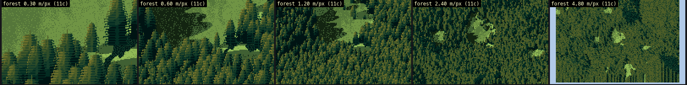
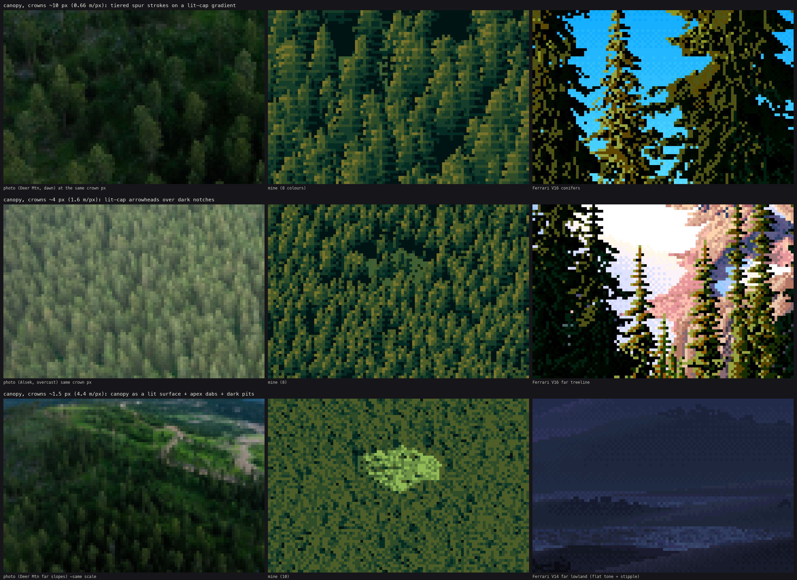
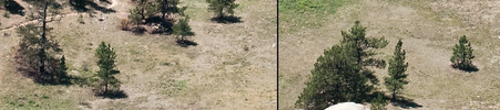
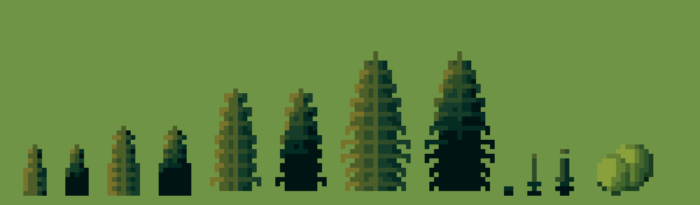
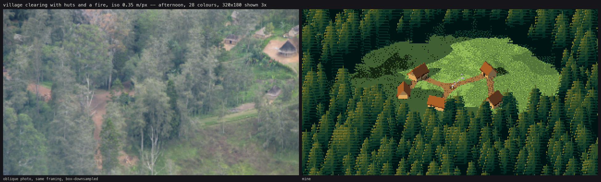
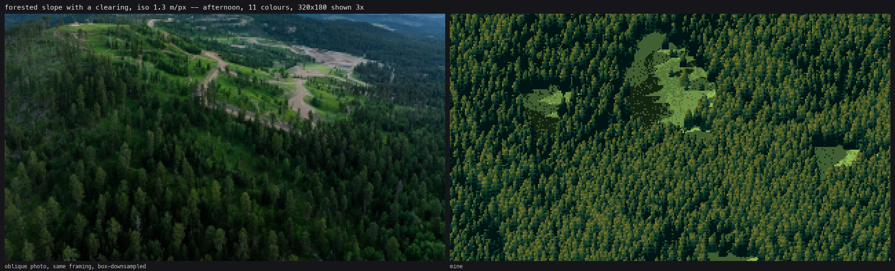

Back to the field guide. Code: ~/work/pixelart-studies/aerial/lib/tech_canopy.py and the forest section of lib/painter.py. Study: study_canopy.py → studies/canopy.png.
This is the technique I'd defend hardest, and its numbers are the ones that went into voxsim. A forest from above is not one thing: it changes technique twice as the crowns shrink. The rule that picks the technique is the crown width in screen pixels:
| crown width | technique | Ferrari analogue |
|---|---|---|
| ≥ 4.5 px | spur sprite on a lit-cap gradient | V16's conifers |
| 3–4.5 px | spire mark: lit arrowhead over a dark notch | V16's far treeline |
| < 3 px | canopy surface, lit like ground, with apex dabs or a sparse stipple | V14's far lowlands |
# painter.py: the regime is decided once per frame from the median crown and metres per pixel
crown = float(np.median(sc.trees["w"]))
forest_mode = "sprites" if (cam.kind == "iso" and crown / cam.mpp >= sprite_min) else "surface" # sprite_min = 3
# tech_canopy.paint_trees: per tree
if w >= 4.5: spr = conifer_sprite(...) # or broadleaf_sprite
else: spr = spire_mark(...)

The same forest from 0.3 to 4.8 m/px. It hands off from spurs to spire marks to surface. (The pale strip around the last cell is the edge of the 700 m world, not sky.)

The study, one row per regime: the photo downsampled to the same crown size, mine, and Ferrari. Crowns are ~10 px in the top row, ~4 px in the middle and ~1.5 px at the bottom.

NRCS lone trees at 3×: a lit crown and a flattened shadow pool.
A conifer sprite w px wide and h px tall (h = tree height × cos(pitch) ÷ m/px) has two layers.
The lit-cap gradient is the photo's layer. The light available falls from the tip toward the base, by how crowded the tree is (occl, 0 for a lone tree and 0.9 in a closed stand):
v = (yy - 1) / max(h - 1, 1) # 0 at the tip .. 1 at the base
avail = 1.0 - occl * np.clip((v - 0.15) / 0.55, 0, 1)
u = (xx - cx) / max(rr, 0.5); sunside = u * side # -1 shade side .. +1 sun side
lvl = avail * (0.62 + 0.38 * sunside + 0.25 * elev) + 0.12 * tone
s = 5 if lvl > 0.95 else 4 if lvl > 0.72 else 3 if lvl > 0.48 else 2 if lvl > 0.3 else 1 if lvl > 0.15 else 0
The steps are the conifer ramp: 0 gap | 1 shadow | 2 reflected || 3 halftone | 4 lit | 5 tip highlight. Steps 0–2 are the shadow family and 3–5 the lit family. Trees whose base is in terrain shadow (lit_ok=False) use only 0–2.
Ferrari's strokes are on top: a 1-px spire for the top ~6%, then tiers every 2 rows (3 above 16 px). On each spur row the full half-width is drawn and its outer ends droop one row. Rows between spurs are 70% as wide and one step darker (the tier notch). The sun-side spur tip gets the highlight:
spur = ((yy - 1 - top + phase) % pitch) == 0
rr = (r if spur else r * 0.7) * (0.88 + 0.24 * rng.random())
if not spur and s > 0 and abs(u) > 0.2:
s = s - 1 if s != 3 else 2 # tier notch: one step down (and across the terminator only 3 -> 2)
if spur and r >= 1.5:
tip = xr if side > 0 else xl
if lit_ok and avail > 0.45:
st[yy, tip] = 5 if avail > 0.7 else 4
Stand density for occl is the number of neighbours within two crown widths:
kd = cKDTree(np.c_[trees["x"], trees["y"]])
cnt = np.array([len(c) for c in kd.query_ball_point(np.c_[trees["x"], trees["y"]], 2.0 * np.median(trees["w"]))]) - 1
occl = np.clip(cnt / 6.0, 0, 1) * 0.9

The sprites at 8×, made by code/figs.py from the real functions. The pairs are crowns 5, 7, 10 and 14 px wide, lone (occl=0, lit to the ground) then in a stand (occl=0.9, lit cap over a dark base). Then spire marks 2, 3 and 4 px wide, and a broadleaf crown. (In this figure the spire heights are 3× their width. In a painting they come from the tree height. The 2-px mark degenerates to a dot and a stem: below 3 px, prefer the canopy surface.)
How I got there: the first sprite was a cone shaded by n·l, and it read as an icon (notebook 041). Spur strokes alone made a regular striped forest, every tree lit the same top to bottom (043). The lit-cap gradient, taken from the photos at their pixel size, was what turned it into a stand (045). See POST.md §7.
The smallest honest version of the spur stroke: a lit tip, a sun-side lit column over the top three quarters, a dark body below, and notches every second row for trees 3 px or wider.
half = c * min(1.0, 0.1 + v * 1.4)
notch = (yy % 2 == 1) and yy > 1 and W >= 3
if lit_ok and yy == 0: st = 4
elif lit_ok and sunside and v < 0.75: st = 4 if (v < 0.35 and d * side > 0) else 3
elif lit_ok and v < 0.3: st = 3
else: st = 1 if v < 0.9 else 0
At first I used the canopy surface for anything under 5 px, and the 4-px row of the study looked like moss. Moving the sprite threshold down to 3 px brought the trees back.
Once crowns are a couple of pixels, stop drawing trees. Rasterise every crown into a height bump on the terrain grid (a cone for conifers, a dome for broadleaf, max-composited), and ray-march terrain + canopy as one surface:
if kind == 0: hgt = trees["h"][sel] * (1 - 0.55 * np.clip(d, 0, 1.2)) # pointed cone top
else: hgt = trees["h"][sel] * (0.75 + 0.25 * np.sqrt(np.clip(1 - d * d, 0, 1))) # dome
np.maximum.at(C, (jj[ok], ii[ok]), hgt[ok])
Then paint that surface by its own light, with three rules from the photos:
Marks: sunlit apices (over 93% of the local top) get the highlight, and the pixel below goes a step down. It's a 1×2 stroke with its own contrast.
s = np.where(lit, np.clip(s, 3, 4), np.clip(s, 0, 2))
s = np.where(ap & lit, 5, s)
below = np.zeros_like(ap); below[1:] = ap[:-1]
s = np.where(below & mask & ~ap, np.where(lit, 3, np.maximum(s - 1, 0)), s)
s = np.where(pit & mask, np.where(sunvis > 0.5, 1, 0), s)
Below ~2.5 px per crown the bumps are finer than the pixels and turn into noise. So the painter blurs the canopy height by 0.6 px and swaps the apex marks for a blue-noise stipple of 1×2 dashes (a lit head with a darker stem) at 13% density, plus a few dark pixels at 10%. That's Ferrari's V14 lowland: one flat tone and a sparse second one.
In a far view with no tree instances at all, the forest is its cover field raised by the tree height (stand_only in painter.py) and painted the same way. A few-km view never touches individual trees.
Instanced trees cast an ellipse from the base away from the sun: its length is h·cot(sun altitude), clamped at 6 h, and its width is the crown's. The shadow must not become a flat dark shape. It moves the ground under it into the ground's own shadow family, keeping the texture (Canvas.to_shadow):
def to_shadow(self, mask):
for m in np.unique(self.mat[mask]):
n = MATERIALS[MAT_NAME[m]]["steps"]; ns = n // 2
sel = mask & (self.mat == m) & (self.step >= ns)
self.step[sel] = np.where(self.step[sel] >= ns + 1, ns - 1, max(ns - 2, 0))
Shadows go in before any crown, and they never land on canopy already painted (the tag channel).
On my first forest plate the slope disappeared under an even carpet of trees. The photos read the terrain through the canopy: a whole stand on a slope turned from the sun is a step or two darker. So each tree takes a tone from the ground normal under it, relative to flat ground:
tn = trees["gn"] @ sun
dd = tn - sun[2]
tone = np.clip(tone + np.where(dd > 0.12, 1, 0) - np.where(dd < -0.08, 1, 0) - np.where(dd < -0.25, 1, 0), -2, 1)

The village plate, where the forest works best: spur sprites on the lit-cap gradient, with the clearing's edge and shadow reading clearly.

The forest-slope plate, where it works least. The per-tree slope tone helps, but the photo reads by its ridge, meadows and track, and my scene doesn't have them. That's composition, and the painter can't supply it.